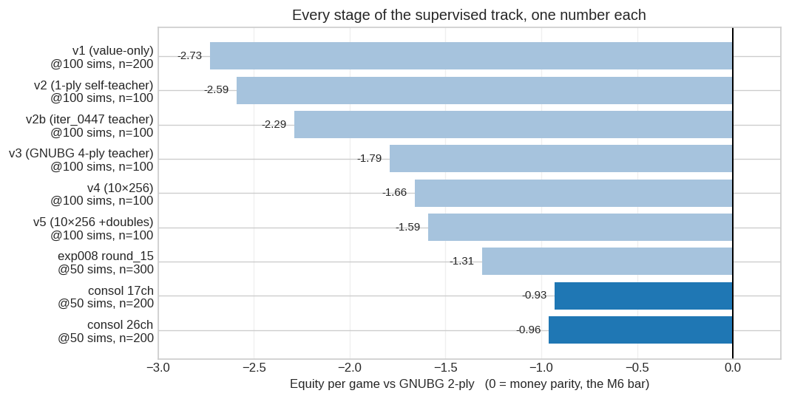
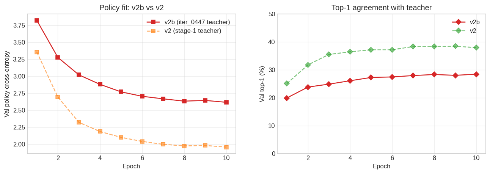
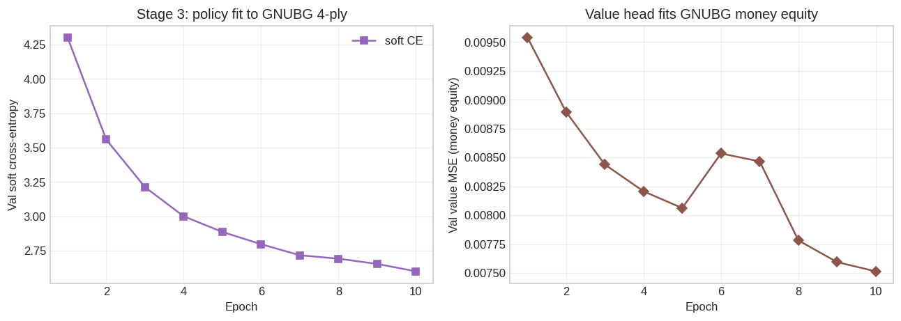
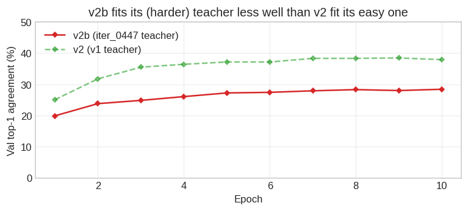
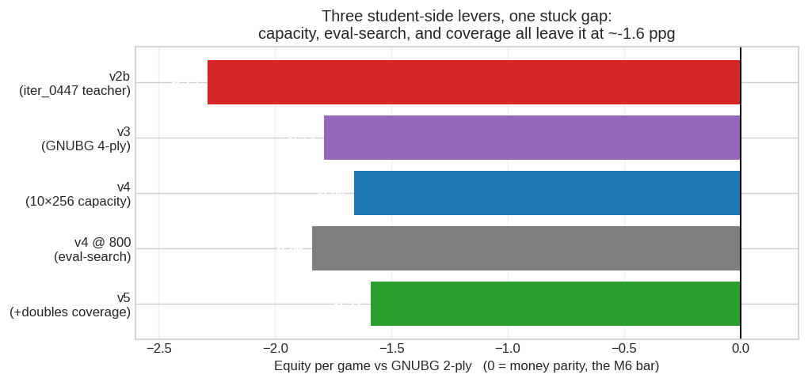
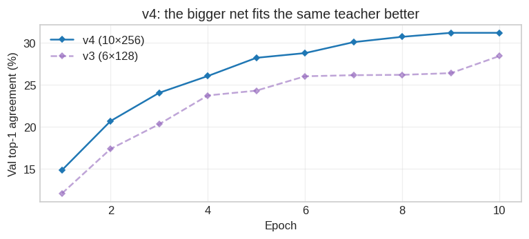
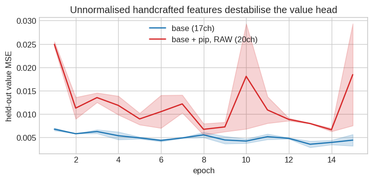
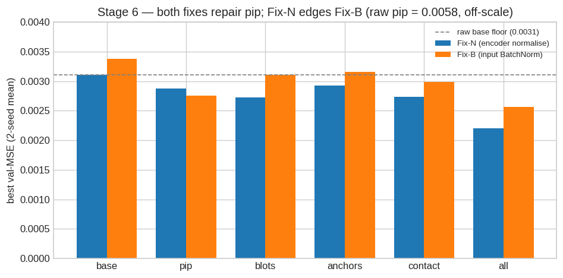
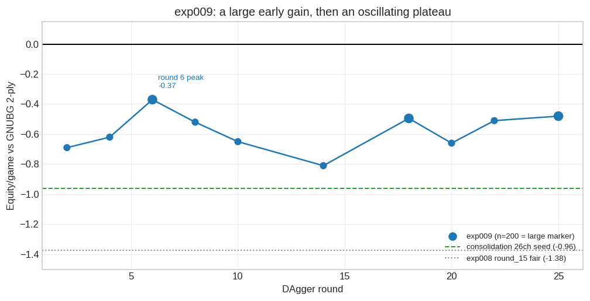

Raccoon Supervised & Expert-Iteration Analysis
Distilling GNUBG: pretraining v1–v5, on-distribution DAgger, and consolidation
This page documents the supervised & expert-iteration track — everything after the self-play track concluded that pure AlphaZero self-play plateaus hopelessly far from GNUBG at this project’s compute scale. The idea: instead of bootstrapping a network from noise, seed it from existing backgammon knowledge — first by regressing on labeled positions (stages v1–v5), then by keeping the GNUBG oracle in the training loop on the learner’s own positions (exp008, consolidation, exp009).
The arc in one paragraph: a calibrated value head alone is useless without a policy prior (v1); synthesised policy labels fix that mechanically (v2); distillation tops out at its teacher’s strength, so teacher quality is the lever (v2b); a GNUBG 4-ply teacher produces the project’s first wins against GNUBG (v3); capacity, eval-time search, and value-label coverage each fail to push past ~−1.6 ppg (v4, v5); the missing ingredient is on-distribution policy data, which live GNUBG labeling of the learner’s own positions supplies (exp008); retraining from scratch on all accumulated labels consolidates those gains (~−0.93 ppg); and scaling the loop (exp009) reaches the current best, ~−0.37 ppg, before plateauing ~0.4 ppg short of parity. Each section below covers one experiment: motivation, setup, results, interpretation — results computed from the experiment logs at render time.
NoteCurrent best (2026-07-23)
exp011 broke the plateau that had held across DAgger and TD self-play: a 10×256 net distilled on ~8M GNUBG-0-ply labels plays 0-ply at parity with GNUBG-0-ply (+0.015 ppg, 209-191, n=400) — establishing the ~−0.3 wall was volume-bound, not a capacity limit of the architecture. That is a different, weaker yardstick than the 2-ply benchmark the rest of this page reports: measured against 2-ply, the best remains exp009 round_06 at −0.37 ppg (n=200), the tail of the DAgger track (−0.93/−0.96 consolidation → −0.37). exp011’s 2-ply standing, and whether its calibrated value head now benefits from search, are not yet measured — the open questions its parity result hands forward.
Summary: the strength ladder
The one metric that matters is standalone strength against GNUBG 2-ply (gnubg-nn at level=world — full-width 2-ply, “World class”; see the self-play page for eval conventions). Each bar is one experiment’s final checkpoint — or its best, where a run oscillated (exp009 shows its round-6 peak):
Two caveats on reading the ladder. Evaluation sim counts differ (100 for v1–v5, 50 for the later checkpoints, as labeled) — and more sims measurably hurts these networks (see v5), so the later bars are not flattered by the lower setting. And 100-game samples carry ±0.3–0.5 ppg of noise; the exp008 round_15 bar pools its original n=100 (−1.19) with a fair n=200 re-benchmark (−1.38).
The full eval record per checkpoint, pooled by opponent and sim count:
| checkpoint | opponent | sims | result | win% | ppg | n |
|---|---|---|---|---|---|---|
| v1 (value-only) | iter_0447 (self-play best) | 100 | 6-194 | 3% | -2.03 | 200 |
| v1 (value-only) | GNUBG 2-ply | 100 | 0-200 | 0% | -2.73 | 200 |
| v2 (0-ply self-teacher) | iter_0447 (self-play best) | 100 | 22-78 | 22% | -1.24 | 100 |
| v2 (0-ply self-teacher) | GNUBG 2-ply | 100 | 0-100 | 0% | -2.59 | 100 |
| v2b (iter_0447 teacher) | iter_0447 (self-play best) | 100 | 49-51 | 49% | -0.04 | 100 |
| v2b (iter_0447 teacher) | GNUBG 2-ply | 100 | 0-100 | 0% | -2.29 | 100 |
| v3 (GNUBG 4-ply teacher) | iter_0447 (self-play best) | 100 | 83-17 | 83% | +1.38 | 100 |
| v3 (GNUBG 4-ply teacher) | GNUBG 2-ply | 100 | 3-97 | 3% | -1.79 | 100 |
| v4 (10×256) | iter_0447 (self-play best) | 100 | 93-7 | 93% | +1.96 | 100 |
| v4 (10×256) | GNUBG 2-ply | 100 | 5-95 | 5% | -1.66 | 100 |
| v4 (10×256) | GNUBG 2-ply | 800 | 16-384 | 4% | -1.84 | 400 |
| v5 (10×256 +doubles) | iter_0447 (self-play best) | 100 | 93-7 | 93% | +1.98 | 100 |
| v5 (10×256 +doubles) | GNUBG 2-ply | 100 | 8-92 | 8% | -1.59 | 100 |
| v5 (10×256 +doubles) | GNUBG 2-ply | 800 | 4-96 | 4% | -1.88 | 100 |
| exp008 round_15 | v5 seed | 50 | 63-37 | 63% | +0.48 | 100 |
| exp008 round_15 | iter_0447 (self-play best) | 50 | 98-2 | 98% | +2.23 | 100 |
| exp008 round_15 | GNUBG 2-ply | 50 | 43-257 | 14% | -1.31 | 300 |
| exp008 round_15 | GNUBG 2-ply | 100 | 8-92 | 8% | -1.48 | 100 |
| consol 17ch | v5 seed | 50 | 186-64 | 74% | +0.96 | 250 |
| consol 17ch | exp008 round_15 | 50 | 122-78 | 61% | +0.45 | 200 |
| consol 17ch | GNUBG 2-ply | 50 | 48-152 | 24% | -0.93 | 200 |
| consol 26ch | v5 seed | 50 | 77-23 | 77% | +1.16 | 100 |
| consol 26ch | exp008 round_15 | 50 | 70-30 | 70% | +0.74 | 100 |
| consol 26ch | GNUBG 2-ply | 50 | 45-155 | 22% | -0.96 | 200 |
| exp009 round_06 (best) | consol 26ch seed | 50 | 74-26 | 74% | +0.81 | 100 |
| exp009 round_06 (best) | pretrained_v2 | 50 | 2-2 | 50% | +0.00 | 4 |
| exp009 round_06 (best) | GNUBG 2-ply | 50 | 83-117 | 42% | -0.37 | 200 |
Data and methodology
Two external data sources feed the track:
| Source | License | What it provides | Size |
|---|---|---|---|
| wildbg-training | CC0 | Pre-roll positions with rollout equities (win, win_g, win_bg, lose_g, lose_bg) — value labels only, no moves |
~300k positions |
| bglab match archive | personal match data | Human match positions (raw), and GNUBG 2-ply/4-ply analysis of those matches (analyzed/) |
~1777 raw matches → ~238k decisions; ~4319 analysed games → ~164k labeled decisions |
The shared pipeline (raccoon/data/): decode positions into a perspective-relative board, encode with the same tensor encoder the self-play network uses (so any pretrained checkpoint is a drop-in --resume target), and replay matches move-by-move through OpenSpiel to recover the legal-action set at every decision. Move matching is robust to notation variants by falling back to a final-board-signature comparison — 99%+ replay success across both the raw and analysed corpora, with per-decision Position-ID verification against the analysed files (0 mismatches). bglab’s own equities are match-cubeful and are never used as targets; value targets come from wildbg rollouts, from a network, or from GNUBG money equities.
Eval conventions match the self-play page: ppg under cubeless money scoring, arena matches at equal MCTS sims, GNUBG benchmark vs 2-ply. Where a benchmark was logged in chunks or replicated, tables on this page pool all rows for the same (checkpoint, opponent, sims).
v1 — value-only pretraining
Motivation. The cheapest possible seed: regress the value head onto wildbg’s ~300k rollout equities and see how far a calibrated value function alone goes.
Setup. 20 epochs on the default 6×128 net (pretrain-wildbg-v1). The policy head receives no gradient and stays random.
Results.

Final val MSE: 0.0021The fit succeeds (val MSE ≈ 0.002 on a [−1, 1] target). The player does not: as a standalone engine it lost 6-194 (−2.03 ppg) to the best self-play checkpoint (iter_0447) and 0-200 (−2.725) to GNUBG — worse than iter_0447 itself against GNUBG.
Interpretation. A calibrated value head is not a player. With a uniform-ish policy prior, 100-sim MCTS spreads its budget over too many moves to find the lines the value head would reward. The policy prior is load-bearing; supplying one became the next step.
v2 — synthesised policy distillation
Motivation. wildbg has no move labels. Manufacture them: replay the bglab human matches, and at each decision do a 0-ply lookahead — static value evaluation of each candidate move, GNUBG’s convention (TD-Gammon calls it 1-ply) — with v1’s value head, one-hotting the best child as the policy target (~238k decisions).
Setup. Fine-tune both heads from v1 (pretrain-wildbg-v2): policy cross-entropy plus value distillation against the teacher’s own V(s), which keeps the value head calibrated while the trunk learns the dice channels (wildbg positions are all pre-roll).
Results.

A large improvement — vs iter_0447 it went from v1’s 3% wins to 22% (+0.79 ppg) — but still a clear loss (22-78, −1.24), and still 0-100 vs GNUBG (−2.59).
Interpretation. The mechanism works: synthesised policy labels produce a usable prior, confirming v1’s diagnosis. But the teacher — a 0-ply argmax under a GNUBG-weak value head — is itself weak, and the student cannot exceed it.
v2b — a stronger teacher
Motivation. If the teacher is the ceiling, raise the teacher: re-synthesise the same policy targets using the strongest value function available — exp005’s iter_0447 — for the 0-ply lookahead. Same matches, same pipeline, better labels.
Setup. As v2, with iter_0447 as both the lookahead value function and the value-distillation target (pretrain-wildbg-v2b).
Results.

By fitting metrics v2b looks worse than v2 — top-1 ~28% vs ~38%, value MSE ~2× higher. By strength it is far better: 49-51 vs iter_0447 (−0.04 ppg) — statistical parity with the best self-play net, in long balanced games rather than v2’s quick collapses. Vs GNUBG: 0-100, −2.29.
Interpretation. Two lessons. You cannot distill past your teacher — parity is exactly the expected ceiling when iter_0447 is the teacher — but you can compress it: v2b matches ~290 GPU-hours of self-play with ~21 CPU-hours of supervised training. And fitting metrics across different teachers are incomparable: 28% agreement with a strong teacher beats 38% agreement with a weak one. Strikingly, MCTS at eval time recovers full strength from a prior that agrees with its own labels only ~28% of the time — search only needs the prior to be directionally right.
v3 — a GNUBG 4-ply teacher
Motivation. The way past iter_0447’s level is a teacher stronger than any network we own. The bglab archive ships one: GNUBG 4-ply analysis of the same matches — world-class labels, for free.
Setup. Read GNUBG’s labels directly off the analysed files at every non-doubles decision (pretrain-gnubg-v3): a soft policy target softmax(money_equities / T) over GNUBG’s candidate moves (near-ties taught as near-ties), and a money-equity value target — never GNUBG’s match-cubeful equity. ~139k positions. Doubles decisions (~18%) are dropped: OpenSpiel splits a doubles play into two decision nodes while GNUBG scores the whole move, so the first-half action is ambiguous. Same 6×128 net, warm from v1.
Results.

Decisive on both fronts. v3 crushes iter_0447: 83-17, +1.38 ppg — with 42 gammons and 20 backgammons won — the first checkpoint in the project to beat it. And v3 wins the project’s first games against GNUBG: 3-97, −1.79 ppg — every prior checkpoint, self-play or supervised, had gone 0-for-all. GNUBG’s backgammon count against us collapsed (64 → 17 per 100 games).
Interpretation. The teacher-quality thesis confirmed at scale: no new search, no bigger net, no self-play — only better labels, and the ceiling lifts above every player the project had produced. This was the first hard evidence the GNUBG gap is closable by supervised means. Top-1 agreement is still only ~28%: the student captures a fraction of its 4-ply teacher, which relocates the binding constraint from the teacher to the student.
v4 — capacity
Motivation. With the teacher fixed at world class, the student’s shortfall has two candidate axes: capacity and coverage. v4 isolates capacity — same teacher, same ~139k cache, network scaled 6×128 → 10×256 (2.5M → 11.9M parameters).
Setup. Single-stage training from random init on the GNUBG cache (pretrain-gnubg-v4-10x256) — the cache carries value targets, so v1’s warm-start is no longer needed. 10 epochs, ~5.6 h on the iMac CPU.
Results.

The bigger net fits the teacher better (top-1 28 → 31%, value MSE 0.0075 → 0.0066) and converts it fully against the internal bar: 93-7 vs iter_0447, +1.96 ppg (zero backgammons conceded). Against GNUBG: 5-95, −1.66 ppg — vs v3’s 3-97, −1.79. That +0.13 ppg is inside the ±0.43 95% CI: statistically no change.
Interpretation. The split is the finding: capacity converts to strength against opponents near the training distribution, and does nothing against GNUBG steering the game into positions the human-match archive doesn’t cover. That is the signature of a coverage/generalisation gap, not a parameter-count gap.
v5 — doubles value coverage, and the limits of search
Motivation. Attack the most concrete coverage hole: the ~18% of decisions dropped as doubles. Their policy is ambiguous under OpenSpiel’s move-splitting, but their value is not — the best candidate’s money equity stands regardless of how the move is split.
Setup. Re-synthesise the cache with each doubles decision as a value-only example (policy masked out): +25k examples, cache 139k → 164k (pretrain-gnubg-v5-10x256-dbl). Same 10×256 single-stage recipe, 20 epochs.
Results. Fit improves on both heads (top-1 33.0%, value MSE 0.0061 — now including the doubles). Strength: 93-7 vs iter_0447 (+1.98) — dead level with v4 — and 8-92, −1.59 ppg vs GNUBG, the best external number of the pretraining stages but within noise of v4’s −1.66. What did shift is the loss profile: GNUBG’s gammons against us fell 55 → 37.
Two follow-up measurements defined the next experiment:
- More search hurts. At 800 sims instead of 100, v4 scores −1.84 (n=400) and v5 −1.88 (n=100) — both worse than at 100 sims. Deeper MCTS lets miscalibrated value backups override the distilled GNUBG policy prior more aggressively, walking further into unfamiliar territory instead of out of it.
- The per-decision error profile (
scripts/error_profile.py, scoring every v5 decision in the 800-sim game log against a GNUBG 0-ply oracle):
side bucket decisions mean loss loss/game share
raccoon total 2675 0.0811 2.170 100%
raccoon non-doubles 1971 0.0669 1.319 61%
raccoon doubles 704 0.1208 0.850 39%
gnubg total 3330 0.0051 0.171 (baseline)Doubles are ~1.8× worse per decision — the policy head’s structural blindness is real — but non-doubles are the larger absolute leak (61% of equity lost). Even a perfect doubles fix leaves ~1.3 ppg on the table.
Interpretation. The third student-side lever in a row moves the external gap by less than noise: after capacity (v4), eval-time search (v4@800), and value-coverage (v5), the gap sits at ~−1.6 ppg no matter what. The diagnosis sharpens: more value labels of the same kind can’t teach move selection on the lines GNUBG forces, and the human-match archive structurally does not contain those lines. What’s missing is on-distribution policy data — and the error profile adds that the value head misleads search even off-doubles, so both targets need fixing. A fixed archive cannot supply either; a live oracle can.
Encoder feature ablation — do handcrafted inputs earn their place?
Motivation. The encoder carries nine handcrafted broadcast channels (pip counts, blots, anchors, contact) added wholesale in commit 23463f0 and never tested. They are deterministic functions of the board — a large net could re-derive them — so their value, if any, is an inductive-bias shortcut in data-limited regimes. Are they helping or hurting?
Setup. Paired ablation in a deliberately small regime: 50k wildbg positions, 15 epochs, 6×128, two seeds per condition (same seed ⇒ same split). Yardstick: held-out value MSE, split into wildbg’s race vs contact files — pip count should help races most. Value-only training, so no play-strength numbers (v1’s lesson: they’d be meaningless).
Results.

The features were silently mis-scaled. The base planes live in [0, 1] by construction; the handcrafted channels were emitted raw — pip count ~95–230, roughly 100× larger. Adding raw pip count alone raised val MSE by ~88% (0.0058 vs 0.0031): the input convolution reads every channel through one weight scale, so the giant channels dominate the gradient. A live regression, hiding since the commit that added the features.

feature raw Fix-N (norm) Fix-B (inbn)
-----------------------------------------------------------------------------
base 0.0031 (0.0038/0.0028) 0.0031 (0.0038/0.0028) 0.0034 (0.0034/0.0034)
pip 0.0058 (0.0040/0.0068) 0.0029 (0.0021/0.0032) 0.0028 (0.0021/0.0031)
blots - 0.0027 (0.0028/0.0027) 0.0031 (0.0036/0.0029)
anchors - 0.0029 (0.0029/0.0030) 0.0032 (0.0031/0.0032)
contact - 0.0027 (0.0026/0.0028) 0.0030 (0.0032/0.0029)
all - 0.0022 (0.0018/0.0024) 0.0026 (0.0023/0.0027)
cells: overall (race / contact); 2-seed mean of each run's best epochBoth candidate fixes repair the blowup: Fix-N (divide each channel by a fixed constant in the encoder) and Fix-B (a BatchNorm over the raw input). Fix-N wins on every feature group, and Fix-B slightly hurts the already-normalised base — standardising clean channels just injects per-batch noise. Once scaled, the full 26-channel encoder reaches val MSE 0.0022 vs base 0.0031 (−29%, and −53% on races, exactly where a pip count should help) and hits base’s floor in 4 epochs instead of 15. No single feature group is decisively justified on its own (individual gaps sit inside the seed-to-seed spread); the robust effects are the full set and the race-side gain.
Interpretation. Input scaling is load-bearing: any new channel must enter at the base planes’ scale. Fix-N became the encoder default (commit c493714), and the normalised 26-channel encoder became one arm of the consolidation A/B. The caveat is built into the design — this measures a small-data inductive bias; at full data a big net may simply re-derive the features (the consolidation tests exactly that).
exp008 — on-distribution DAgger
Motivation. Two results pinned down the design. The archive stages topped out at ~−1.6 ppg with on-distribution policy as the diagnosed gap (v5); and exp007 showed pure self-play from the v5 seed erases it. Expert iteration threads the needle: generate positions with the current net’s own play (fixing the distribution gap), but label them with a fixed strong oracle (fixing the signal-quality trap). The installed gnubg-nn engine — the benchmark opponent itself — can label arbitrary positions programmatically.
Setup. 15 DAgger rounds, warm-started from v5 (10×256, 17-channel encoder). Each round: the current net plays temperature-sampled games; every visited position is labeled live by GNUBG at 2-ply (soft policy over candidates + money-equity value; ~30–48k labels/round, capped at 10 h); the round cache is merged with the 4-ply archive plus the last 4 rounds’ caches; fine-tune 4 epochs at lr 3×10⁻⁴; evaluate. Pure supervised distillation throughout — no MCTS targets, no terminal outcomes — so neither exp007 failure mode can recur by construction. Hands-off on the iMac CPU, 2026-06-27 → 07-06.
The on-dist data is a genuinely different distribution where it matters: v5’s error against the generated labels is far higher than against the archive (value MSE 0.016 vs 0.006; top-1 25% vs 49%), and the generated positions are heavier in hitting sequences (on-bar 46% vs 29%) and doubles (27% vs 15%) — the regions the error profile flagged.
Results.
| round | vs v5 seed | vs iter_0447 | vs GNUBG 2-ply |
|---|---|---|---|
| 1 | 55-45 +0.16 | ||
| 2 | 53-47 +0.14 | ||
| 3 | 57-43 +0.29 | ||
| 4 | 57-43 +0.37 | 95-5 +2.07 | 7-93 -1.65 |
| 5 | 55-45 +0.22 | ||
| 6 | 54-46 +0.11 | ||
| 7 | 56-44 +0.36 | ||
| 8 | 55-45 +0.11 | 96-4 +2.24 | 9-91 -1.42 |
| 9 | 59-41 +0.40 | ||
| 10 | 55-45 +0.26 | ||
| 11 | 54-46 +0.20 | ||
| 12 | 65-35 +0.60 | 95-5 +2.06 | 10-90 -1.55 |
| 13 | 60-40 +0.48 | ||
| 14 | 57-43 +0.23 | ||
| 15 | 63-37 +0.48 | 98-2 +2.23 | 17-83 -1.19 |
(100 games per cell, 50 eval sims; GNUBG benchmarked every 4th round)
Three verdicts, in order of importance:
- The regression trap is gone. Where exp007 fell to 10-90 against the v5 seed in 50 self-play iterations, exp008 climbs — to 63-37 (+0.48 ppg) by round 15. Pooling the last four rounds: 245/400 vs the seed, z ≈ 4.5 — unambiguous improvement over the strongest supervised checkpoint, the first method to achieve that.
- The external gap narrowed: 7% → 17% wins, −1.65 → −1.19 ppg between rounds 4 and 15 (two-proportion p ≈ 0.03). (The fair n=200 re-benchmark of round_15, run later, puts it at −1.38 — see the consolidation below.)
- iter_0447 is now beaten 98-2 (+2.23), up from the seed’s 93-7.
A same-conditions re-check at 100 sims confirms the ordering (v5 −1.72, round_15 −1.48, n=100 each) — and reproduces the “more sims hurt” pattern from v5: both nets score worse at 100 sims than at 50, so value-head calibration under search remains the standout bottleneck.
Infrastructure aside: the run surfaced a 10× CPU-training slowdown — weights drifting into subnormal floats, hitting the FPU slow path. torch.set_flush_denormal(True) fixed it (measured 10.24× on the degraded weights) and retroactively explains exp007’s mysterious SGD slowdown; together with OMP_WAIT_POLICY=PASSIVE (idle OpenMP threads otherwise busy-spin under desktop contention) it is now standard for CPU training.
Interpretation. The diagnosis from v5 was correct and the fix works: on-distribution states plus a fixed strong expert for both targets improves on the seed where self-play destroyed it. The return is modest per round (~0.4–0.5 ppg over 15 rounds / ~200 CPU-hours), and the loop’s ceiling is its teacher — GNUBG 2-ply — by construction. Both facts shaped what came next: consolidate the accumulated labels properly, then scale the loop.
Phase A consolidation — retrain from scratch on everything
Motivation. exp008 left two loose ends. Its checkpoint was the product of 15 successive warm fine-tunes over shifting data mixes — was strength left on the table versus simply retraining from scratch on all accumulated labels? And the feature ablation validated a normalised 26-channel encoder at small scale but the production lineage was still 17-channel — the retrain is the natural A/B point. Both questions gate the seed choice for exp009.
Setup. (experiments/pipeline_consolidate.sh, 2026-07-08 → 07-10.) Merge the 4-ply archive (164k) with all 15 exp008 on-dist round caches (~680k) into one ~844k-example cache; re-encode a copy losslessly to 26 channels. Train a fresh random-init 10×256 on each cache (12 epochs, lr 10⁻³, best-val-epoch checkpoint selection). Evaluate each arm vs the v5 seed, vs exp008 round_15 (the incumbent), and vs GNUBG 2-ply (4×50 games) — plus a fair n=200 GNUBG re-benchmark of round_15 itself, all at 50 sims.
Results.
| checkpoint | opponent | sims | result | win% | ppg | n |
|---|---|---|---|---|---|---|
| consol 17ch | v5 seed | 50 | 186-64 | 74% | +0.96 | 250 |
| consol 17ch | exp008 round_15 | 50 | 122-78 | 61% | +0.45 | 200 |
| consol 17ch | GNUBG 2-ply | 50 | 48-152 | 24% | -0.93 | 200 |
| consol 26ch | v5 seed | 50 | 77-23 | 77% | +1.16 | 100 |
| consol 26ch | exp008 round_15 | 50 | 70-30 | 70% | +0.74 | 100 |
| consol 26ch | GNUBG 2-ply | 50 | 45-155 | 22% | -0.96 | 200 |
| exp009 round_06 (best) | consol 26ch seed | 50 | 74-26 | 74% | +0.81 | 100 |
| exp009 round_06 (best) | pretrained_v2 | 50 | 2-2 | 50% | +0.00 | 4 |
| exp009 round_06 (best) | GNUBG 2-ply | 50 | 83-117 | 42% | -0.37 | 200 |
| exp008 round_15 (fair re-benchmark) | GNUBG 2-ply | 50 | 26-174 | 13% | -1.38 | 200 |
Both arms beat everything before them: the 17ch arm reaches −0.93 ppg (24% wins, n=200) against GNUBG 2-ply and the 26ch arm −0.96 (22%) — statistically indistinguishable from each other, and a large step past the incumbent. Both beat round_15 head-to-head (+0.45 and +0.74 ppg pooled). Meanwhile round_15’s own fair n=200 benchmark lands at −1.38, well below its documented −1.19: the n=100 number was an optimistic draw (±0.5-ppg-wide CIs make that routine).
The run also priced deeper teachers for future rounds (scripts/bench_gnubg_ply.py, 30 positions):
| GNUBG ply | s/decision | labels/h/core | vs 2-ply |
|---|---|---|---|
| 0 | 0.003 | ~1.4M | — |
| 2 | 0.305 | ~11.8k | 1× |
| 3 | 16.2 | ~220 | 53× |
| 4 | 262 | ~14 | 861× |
Interpretation. Three conclusions. Consolidated retraining beats incremental fine-tuning by ~+0.4 ppg on the identical label pool — the DAgger loop’s warm fine-tunes had accumulated real sub-optimality (recency-window mixes, per-round overfitting). Measure at n≥200: the −1.19 → −1.38 correction is a standing reminder that 100-game GNUBG evals carry ±0.5 ppg. And the handcrafted features wash out at scale — at 844k labels the 26ch arm has no edge over 17ch (consistent with the ablation’s small-data framing); the 26ch arm was nonetheless adopted as the exp009 seed for encoder consistency going forward (it also beat the incumbent by more head-to-head, +0.74 vs +0.45, though that difference is itself within noise).
exp009 — scaled DAgger
Motivation. exp008 showed on-distribution DAgger works but returns only ~0.4–0.5 ppg over 15 slow rounds, and the consolidation showed the accumulated labels held more than the incremental fine-tunes had extracted. exp009 restarts the loop from the consolidation 26ch arm to push the gains further and stress-test the method at scale, with four upgrades from the exp008 post-mortem.
Setup. (experiments/pipeline_exp009.sh, 2026-07-10 → 07-21, GCP T4 VM.) 25 DAgger rounds warm-started from the consolidation 26ch seed, GNUBG 2-ply teacher, 50 eval sims. The upgrades: parallel label synthesis (14 worker processes shard each round — the ~10 h synth cap drops to ~4 h even at a 2× larger budget), doubles policy labels (the half-move labels candidate_equities already computes were discarded in exp008; the error profile priced that leak at ~0.85 ppg/game — now ~26% of each round’s labels carry policy targets, none discarded), best-val-epoch selection (every exp008 round overfit past epoch 1), and a 2× round budget (120k labels/round). GNUBG benchmarked every 2nd round (n=100), milestone n=200 at rounds 6/18/25.
Results.
| round | vs seed (arena) | vs GNUBG 2-ply | n (GNUBG) |
|---|---|---|---|
| 1 | 62-38 +0.49 | ||
| 2 | 51-49 +0.14 | 28-72 -0.69 | 100 |
| 3 | 64-36 +0.51 | ||
| 4 | 70-30 +0.60 | 30-70 -0.62 | 100 |
| 5 | 63-37 +0.48 | ||
| 6 | 76-28 +0.78 | 83-117 -0.37 | 200 |
| 7 | |||
| 8 | 71-29 +0.78 | 36-64 -0.52 | 100 |
| 9 | 72-28 +0.72 | ||
| 10 | 70-30 +0.59 | 33-67 -0.65 | 100 |
| 11 | 57-43 +0.24 | ||
| 12 | |||
| 13 | 67-33 +0.52 | ||
| 14 | 63-37 +0.49 | 25-75 -0.81 | 100 |
| 15 | 67-33 +0.51 | ||
| 16 | |||
| 17 | 64-36 +0.44 | ||
| 18 | 70-30 +0.61 | 70-130 -0.50 | 200 |
| 19 | 67-33 +0.55 | ||
| 20 | 64-36 +0.45 | 31-69 -0.66 | 100 |
| 21 | 66-34 +0.51 | ||
| 22 | 70-30 +0.70 | 36-64 -0.51 | 100 |
| 23 | 71-29 +0.59 | ||
| 24 | |||
| 25 | 162-38 +1.49 | 70-130 -0.48 | 200 |
(arena = 100 games vs the frozen consolidation 26ch seed; GNUBG every 2nd round, n=100, milestone n=200 at rounds 6/18/25; 50 eval sims. Blank cells are evals skipped when a VM preemption resumed past a completed round.)

Three readings:
- A large early gain, then a plateau. The gap to GNUBG halves in six rounds — −0.96 (seed) → −0.37 (round 6, n=200), 41% wins — the project best, ~60% of the remaining gap to parity closed. But no later round beats it: rounds 8–25 oscillate in a −0.5 to −0.8 band, and the other two n=200 milestones (round 18 −0.50, round 25 −0.48) sit within ~1 SE of round 6. The doubles-policy fix plus the bigger budget bought the early jump; the loop then stopped compounding.
- The head-to-head keeps climbing even as the external gap doesn’t. Against the frozen seed the arena rises to +0.5–0.9 ppg by the late rounds — the net keeps beating its own history at 50 sims while its standing against GNUBG bounces. “Beats its predecessor” and “closes the external gap” are different claims.
- iter_0447 is buried 99-1 (+2.41 ppg) by the final round — the strongest self-play checkpoint now loses essentially every game.
Ops aside. The run spanned 11 days on a preemptible VM in a capacity-crunched zone — ~9 preemptions, all auto-recovered by a local watchdog, plus a spot-price spike that put the Phase A+B bill at ~kr.880 (~$128), 2–4× the estimate, most of it spent on the post-round-6 plateau. That motivated per-round cost projection + clean round-boundary budget/plateau stopping (scripts/pipeline_budget.py) for future runs.
Interpretation. Scaling the loop confirmed the method and set a new best, but exposed its shape: DAgger with a warm-started, ungated loop makes its biggest correction early (here, the doubles-policy fix), then oscillates around a plateau rather than converging monotonically — nothing gates a round on improving, so the checkpoint advances even through regressions and the best (round 6) is a peak the run wandered away from. Two lessons carry forward: gate on eval (keep-best, not last) and the consolidation’s measure at n≥200 (the n=100 rounds are individually too noisy to rank). The plateau ~0.4 ppg short of parity, teacher fixed at 2-ply, is the teacher-ceiling signal that motivates exp010’s TD self-play.
exp011 — clone GNUBG-0-ply’s value at volume
Motivation. Two independent methods had now stalled at the same place: exp009 DAgger (−0.37 vs GNUBG-2-ply) and exp010 TD self-play both plateaued ~0.3 ppg short of even 0-ply, and exp010 exposed why — the distilled nets predict equity well enough for MCTS but play 0-ply badly (their value isn’t accurate at the margin between sibling moves; the exp009 seed plays 0-ply at −2.30 vs GNUBG-0-ply). exp011 asks the diagnostic question directly: is that plateau volume/fidelity-bound — the net can represent GNUBG’s value but was never given enough clean labels — or capacity-bound, a limit of the 10×256 architecture? Cloning GNUBG-0-ply’s value at a volume DAgger never reached separates the two.
Setup. (experiments/pipeline_exp011.sh, local iMac CPU, 2026-07-21 → 07-23.) GNUBG plays itself at 0-ply — greedy, since the dice already fan out coverage — and every pre-roll position is recorded with GNUBG’s 0-ply outcome probabilities (scripts/gen_gnubg_selfplay.py); play is the label, so generation is net-free and cheap (~8M positions in ~7 h). Value-only (the value head is the whole player: 0-ply move selection, no policy head), a confound-free two-arm A/B trained from random init on the identical positions (scripts/train_distill.py): arm A a scalar head (MSE against equity), arm B a six-outcome softmax head (win/gammon/bg × win/lose, with equity derived for play) — the multi-component target GNUBG and TD-Gammon use. Each arm hit its 15 h wall after ~1 epoch (~6M positions seen). Final strength is each arm’s 0-ply play vs GNUBG-0-ply at n=400 (scripts/eval_gnubg0.py).
Results (vs GNUBG-0-ply; seed and plateau shown for scale):
| checkpoint | equity/game | wins | n |
|---|---|---|---|
| exp009 round_06 seed (0-ply play) | −2.30 | — | 20 |
| exp009 / exp010 plateau (0-ply) | ~−0.3 | — | — |
| exp011 arm A — scalar | +0.015 (95% CI ±0.18) | 209/400 (52%) | 400 |
| exp011 arm B — outcomes6 | −0.19 (±0.18) | 181/400 (45%) | 400 |
Interpretation. Two findings.
- The plateau was volume/fidelity-bound, not capacity-bound. Arm A reached parity with GNUBG-0-ply — +0.015 ppg is statistically indistinguishable from zero — decisively clearing the ~−0.3 wall that held across both exp009 and exp010. The 10×256 architecture could always represent GNUBG’s value function; it simply needed enough clean labels, which self-play and DAgger never supplied. Volume was the missing ingredient, and 0-ply — a near-free teacher — supplies it in bulk.
- The scalar target matched or beat the multi-component one, here. Arm A led arm B by ~0.20 ppg (≈1.1× the CI — weakly significant). Hold this loosely:
best.ptwas selected on noisy n=40 in-loop evals and each arm ran only ~1 epoch, so it is not a clean A/B — “scalar was at least as good” is fair; “multi-component is worse” is not established, and the six-outcome head is still wanted for the cube.
The honest boundary: this is parity with 0-ply, not past it — and pure 0-ply distillation cannot go past it, because you cannot distill past your teacher. exp011 was a diagnostic (can the 10×256 architecture represent GNUBG’s value? — yes), and having answered that, more 0-ply labels are spent: the net is already on the teacher’s ceiling, so extra data only lands there more precisely, never above. Going beyond 0-ply needs a signal stronger than 0-ply, and the cheapest is already in hand: arm A now plays 0-ply at GNUBG-0-ply level, so giving its calibrated value head its own deeper search (MCTS / 2-ply) should approach 2-ply strength for no new labels — the sharpest form yet of the “does search finally help?” question (v5), where every prior, miscalibrated net was hurt by search instead. That, not more labels, is the next lever.
What we’ve learned
- A calibrated value head is not a player — with a random policy prior, MCTS never searches the moves the value head would reward (v1).
- Policy labels can be synthesised by 0-ply lookahead over a position corpus; the policy prior is load-bearing (v2).
- You cannot distill past your teacher, and teacher quality is the whole game — swapping the teacher moved the student from −1.24 to parity with iter_0447 with no other change; distillation also compresses (≈290 GPU-hours of self-play into ~21 CPU-hours) (v2b).
- A world-class teacher breaks the internal ceiling: GNUBG 4-ply labels produced the first checkpoint to beat iter_0447 and the first to take games off GNUBG (v3).
- Capacity, eval-time search, and value-label coverage all fail to move the external gap — three levers tested in isolation, ~−1.6 ppg regardless; the missing ingredient is on-distribution policy data (v4, v5).
- More search can hurt: deeper MCTS amplifies a miscalibrated value head, overriding a good distilled prior (v5, confirmed again in exp008).
- Input scaling is load-bearing — unnormalised handcrafted channels were an invisible regression; normalise in the encoder, not with an input BatchNorm (ablation).
- On-distribution DAgger works where self-play fails: learner-generated states + oracle labels for both targets improved on the strongest seed and broke the −1.6 wall (exp008).
- Consolidated retraining beats incremental fine-tuning (~+0.4 ppg on the same labels), n=100 GNUBG evals mislead (−1.19 vs −1.38), and the handcrafted features wash out at 844k labels (consolidation).
- Scaling DAgger sets a new best but plateaus — the loop’s biggest gain lands early (the doubles-policy fix), then an ungated, warm-started loop oscillates around a plateau instead of converging; the fix is eval-gated keep-best, and the ~0.4-ppg-short-of-parity plateau under a fixed 2-ply teacher is the ceiling that motivates TD self-play (exp009).
- Volume, not capacity, was the plateau — ~8M clean GNUBG-0-ply value labels produced a net that plays 0-ply at parity with the teacher, clearing the ~−0.3 wall DAgger and TD self-play both stalled at; the 10×256 architecture could always represent the value function, it just needed the labels (exp011).
- The board-signature replay layer is reusable infrastructure — 99%+ match rate across raw and analysed corpora, behind every dataset on this page.
Open questions
- What counts as beating GNUBG. The bar is a matched-or-less-search win: our net must beat GNUBG’s deployed 2-ply play either with no more search (the gold standard — a static 0-ply net that beats GNUBG-2-ply, i.e. a strictly better evaluator playing cheaper) or at equal search (our-net + 2-ply vs GNUBG + 2-ply). Winning only by searching deeper at play time (our-net + 3-ply beats GNUBG-2-ply) does not count — it is GNUBG’s own idea with more inference compute, and it collapses the instant search is held equal. The real distinction is where the compute lives: lookahead baked into the net at training time (better labels, self-play) is fair and deploys cheap; lookahead escalated at play time is not. This is why the roadmap builds the evaluator first and treats search as the finish, not the crutch.
- The teacher ceiling. DAgger converges to GNUBG 2-ply by construction, and 3-ply labels cost 53× per label — steep for a teacher we intend to outgrow. exp009 plateaued ~0.4 ppg short of parity, confirming this is now the binding constraint. The leading escape — TD(λ) self-play from the consolidated seed — was tested in exp010: it does lift a strong seed (the first self-play method here to do so, unlike exp007), but on a pure-greedy recipe it plateaus ~0.3 ppg short of even 0-ply parity. Surpassing 0-ply is still open; candidate levers are exploration/temperature in the TD loop, a distill-to-0-ply-parity seed before self-play, or the value-head changes below.
- Ranking checkpoints on a plateau. exp009’s three n=200 milestones (round 6 −0.37, round 18 −0.50, round 25 −0.48) are within ~1 SE, so which is the true best — the deliverable — needs a larger head-to-head (n≥400) or a tie-break arena; the n=100 per-round evals cannot separate them.
- Value calibration under search. “More sims hurt” has now been measured three times. A value head that search strengthens rather than undermines — possibly via multi-component outputs (win/gammon/bg probabilities, as TD-Gammon and GNUBG use) — is an open design question feeding exp010. It is sharpened by the ply-strength figures below: GNUBG barely improves from 0→2 ply (it is already near-perfect, so search hits diminishing returns) yet never worsens, whereas Raccoon — far from perfect, where search should help most — gets worse. A weak net whose own search degrades it is the clearest single indictment of the value head.
- From 0-ply parity to the 2-ply benchmark. exp011 reached parity with GNUBG-0-ply, breaking the plateau — but 0-ply is a weaker reference than the 2-ply benchmark, and its 2-ply standing is unmeasured. Two things to run now that parity is in hand: (1) the deferred GNUBG-0-ply-vs-2-ply head-to-head in our own harness, to price how close near-GNUBG that actually is; (2) arm A’s
best.ptunder MCTS / 2-ply search — the value head is, for the first time, calibrated for static play, so this is the sharpest test yet of whether “more sims hurt” (below) finally flips into “more sims help.” A value head that search strengthens is the route from 0-ply parity toward 2-ply strength. - Beyond 0-ply needs a stronger signal, not more labels. Since pure 0-ply distillation caps at the 0-ply teacher, reaching parity ends the value of more 0-ply labels. Per the fair-beat principle above, the priority is a better evaluator, so the routes rank: (a) TD self-play from the 0-ply-parity seed — the primary next experiment. It is the only ceiling-free route, cheap and local, and it fixes exp010’s one flaw: that run was crippled by a seed playing 0-ply at −2.30, so its self-play (and its TD targets) were poor; arm A plays 0-ply at parity, so its self-play is near-GNUBG-quality. The pivotal unknown is whether exp010’s ~−0.3 plateau was the recipe’s attractor (TD would decay arm A from parity toward −0.3) or seed-limited (arm A climbs above 0-ply). (b) Stronger-teacher distillation — self-generated 2-ply labels (feasible on our own hardware, ~8 VM-hours for 10M; not a data-partnership dependency), a reliable fallback but ceilinged at GNUBG-2-ply. (c) Search on the calibrated head — the finish, not the lead: a genuinely superior net wins at matched search, so the net is load-bearing; search doubles as a cheap diagnostic of whether “more sims hurt” finally flipped. A volume scale-up (fleet generation + GPU training) earns its keep only under (b); a deeper-than-2-ply teacher (rollout / 3–4-ply analysis, e.g. via a Backgammon Galaxy collaboration) is the only external data that could break the 2-ply ceiling, since we can already self-make 2-ply.
- The multi-component head, cleanly. exp011’s scalar arm matched/beat the six-outcome arm, but the A/B was confounded (noisy keep-best, ~1 epoch each). A clean rematch — equal training, eval-gated at n≥200 — would settle whether the multi-component target helps, and it is wanted regardless for the cube and for a TD value head.
- The cube. Everything on this page is cubeless checker play, but the M6 goal (“beat GNUBG at money game”) implies the doubling cube. Reaching parity on the cubeless metric is necessary but not sufficient; either the goal is re-scoped to cubeless explicitly, or cube modelling joins the roadmap.